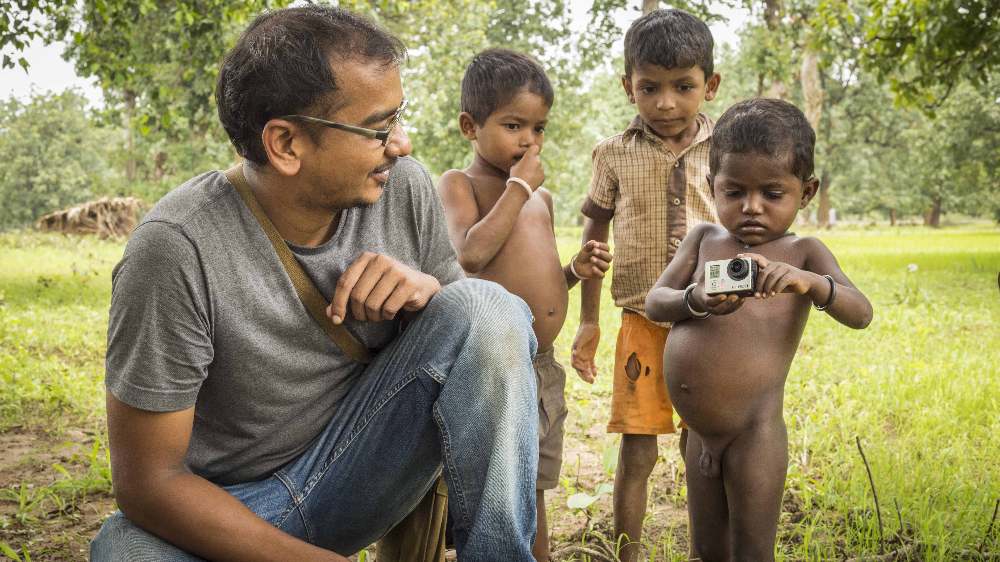
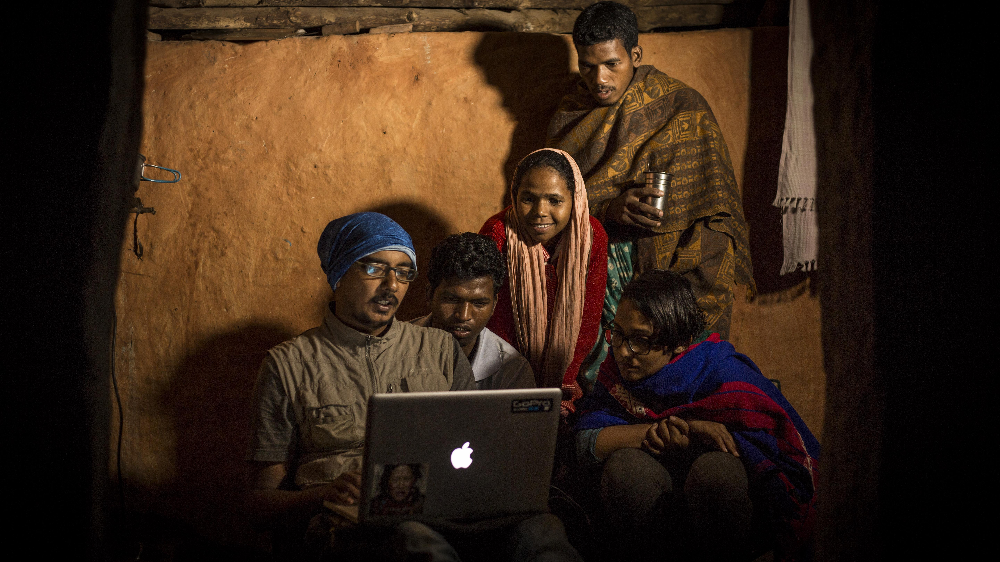
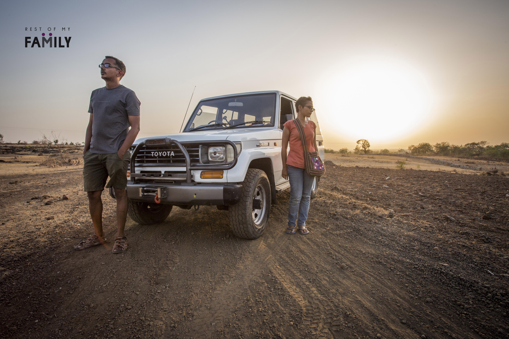

Our story
The seed for Rest Of My Family was sown in 2010 when Akshatha and Piyush decided to dedicate their lives to art and philosophy and find ways to bring both disciplines together to do socially relevant work. After graduating from National Institute of Technology, Karnataka with B.Tech degrees in 2008, they worked for two years in the corporate world before realizing that their calling lay else where.
In 2010, Piyush decided to learn and use documentary photography as his medium of expression, and Akshatha chose writing as her medium on this journey.
Between 2010 and 2013 while they were on the journey of taking an emotion and an initial idea of combining art and philosophy to achieve socially relevant work into something real and practical, Piyush worked on various independent photography, fiction and non-fiction films, Akshatha explored her tryst with writing as a journalist with The New Indian Express.
During this period they both started traveling to rural and tribal communities as frequently as their resources allowed them to. They started sharing their findings through photo-stories. They initially thought that writing about social-issues would draw attention of those who have resources to make a difference to the lives of the ignored sections of rural and tribal society.
But over time they were convinced that writing/documenting alone seldom results in a constructive impact on the individuals and communities that are being written about. They knew that they had to do more.
They had to do more because as they travelled and lived with far flung families and communities and received all the love, care and protection from people who were strangers until that point, they were convinced that all social and cultural walls and structures that separate man from another man, one family from another family, one culture from another culture are a human construct and don’t really exist.
“It is crucial to understand that the whole of humanity is one big family but somehow, over time, we have lost that connection with one another. Our struggle for individual survival has taught us to draw a circle of 'me and my' around us and we consider only certain people, places and things as our own. By the very design of this paradigm, the rest of the people, places and things in this world fall outside this circle of love and compassion. And, in this societal race of securing more resources for ourselves and our loved ones, most of us have forgotten our relationship with one another at large. There are some of us that have fallen out of everybody's circle of 'my' or have been left too far behind in the race to survive. This project is an attempt to connect back, re-discover our relationship with and understand our responsibility towards the larger family that we are a part of -- the rest of our human family. Hence, the name 'Rest of My Family'.”

The more they traveled and the more they met new people, their social walls just melted away. Over time, fear and suspicion was replaced with love and trust as a predisposition. They realised that everyone they met and lived with was a part of their own family. And, when someone is part of your family, just writing about their challenges and needs isn’t doing enough. Their problems are not just their problems alone. They become your problems too and you have to try your best to find a solution to these challenges with all our resources, ideas and limitations.
Supporting other people and communities was almost impossible for a freelance writer/ photogapher.
But by 2015, crowd funding had emerged as a serious channel for individuals with a drive and vision to realize their dreams.
Without wasting any time a crowd funding campaign was launched in order to raise enough funds to kick-start Rest Of My Family in its present form.
The campaign was a success and it was time for what they had envisioned to come a full circle. Today, ROMF is a story driven social-work-through-art nonprofit. After preliminary research, Piyush and Akshatha travel to neglected rural and tribal areas and document the social scenarios, challenges and general life of individuals and communities. These photo stories and documentary films are then published in order to raise awareness and to start a dialogue in public space about these issues.
“By showing various social issues to be a direct result of our selfish/competitive paradigm, we wish to encourage/support individuals to shift towards to a more collaborative/co-operative attitude and world. This is a part of our awareness efforts. Apart from documentation we also identify ways in which their lives can be improved and empowered on various fronts. After which we source required funds from our funding partners, agencies and extend necessary support to the individuals/ communities in question through the most effective way with our local regional NGO partners.”

On February 3rd 2016, as a part of #DriveForChange, the first campaign under Rest Of My Family project Piyush and Akshatha embarked on a drive through rural India non-stop for an entire year.
Since then they have documented several communities and the issues they grapple with. Through photo stories and video documentaries they have been working towards raising awareness about these communities and their challenges. They have also initiated and completed various social development projects in the verticals of rural healthcare infrastructure, education, solar electrification, farmer development projects and water access projects across the country - Karnataka, Maharashtra, Chattisgarh, Orissa, West Bengal and Assam.
